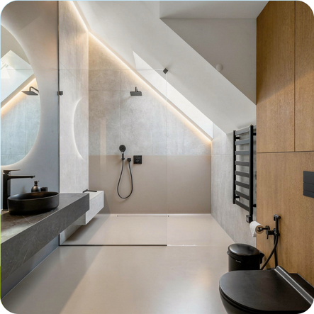
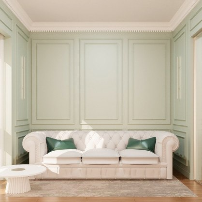

Våra tjänster
Från första provbit
till färdigt rum.
Vi lägger, slipar och förnyar golv. Vi hjälper också till med våtrum, färg och materialval – för både hem och verksamheter.

Golvläggning
Parkett, laminat och vinyl. Vi hjälper dig från materialval till färdigt golv.
Läs mer
Golvslipning
Ta vara på trägolvet du redan har, med slipning och ny ytbehandling.
Läs mer
Våtrum
Golv och väggar i våtrum, med omsorg om arbetet under den synliga ytan.
Läs mer
Badrumsrenovering
Planera ett badrum där material, funktion och känsla får hänga ihop.
Läs mer
Textilgolv
Mjuka golv som ger rum en annan känsla – hemma och på jobbet.
Läs merMattläggning
Mattor för hem, verksamheter och våtrum. Hjälp hela vägen till läggning.
Läs mer
Målning & färg
Hitta kulören som får väggar, golv och inredning att kännas som en helhet.
Läs mer
Maskinuthyrning
Ska du göra arbetet själv? Fråga butiken om maskiner och verktyg att hyra.
Läs merDitt nästa steg
Berätta vad du
har i tankarna.
Vi hjälper dig att ta nästa steg. Ring oss eller beskriv ditt projekt i ett mejl.